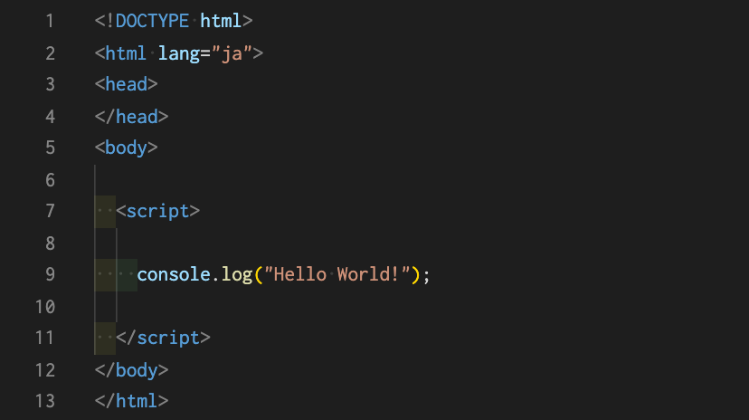

まず、任意のindex.htmlを作成してください。とりあえずheadやbodyの中身は空でも構いません。
index.htmlを作成したら、慣例に従ってbodyタグの一番下に""タグを設置し、その中に記述していきます。
外部ファイルに記述してHTMLファイルで読み込む方法もあり、ファイルの拡張子は.jsで保存します。一般的にはJavaScript用のフォルダを作成し、その中にファイルを保管しておきます。
（例）＜script src="js/test.js"＞＜/script＞
JavaScriptの書き方についてはこちらの記事も参考にしてみてください。
index.html上に次のような記述をし、ブラウザのデベロッパーツール（検証）で確認してみてください。
"Hello World!"という文字列がコンソール上に表示されていると思います。
今回のJavaScriptのソースコードを解説していきます。
console.log("Helo World!");
「console.log()」とは「コンソールに()の中身・結果を記録して表示する」というものになります。 もう少し本格的に言うと、console.log()はJavaScriptで定義された関数の1つです。 どんな時に使うかというと、主にJavaScriptをプログラミングしている時に動作確認など表示する必要があるメッセージを出力したりするために使用されます。プログラミング中は動作確認を行いながら実装していくことがとても大切です。ちなみに定義した変数を表示したりすることもできます。 人によってはデバッグ時にalert()を使う方もいますが、console.logの方が使う人が多い印象です。 Chromeの「デベロッパーツール」でコンソールを確認することができます。
簡単なプログラムではありましたが、まずJavaScriptの構文に慣れていくことから始めていきましょう。では次の章へお進みください。